现代德语文学流派¶
第一讲 施尼兹勒与霍夫曼斯塔尔¶
一、课程内容¶
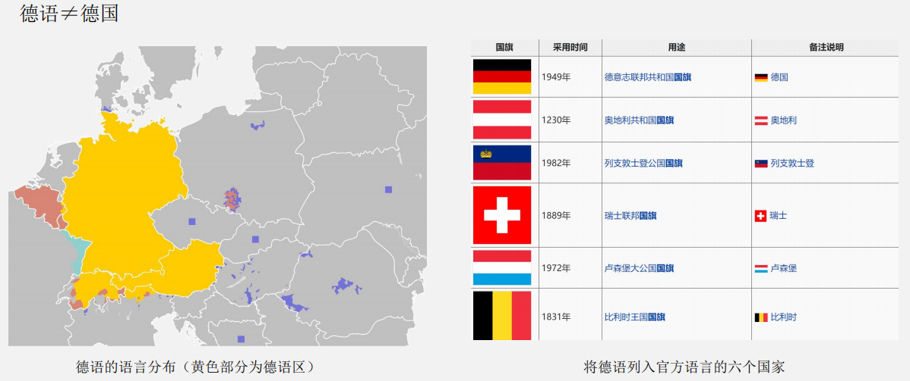
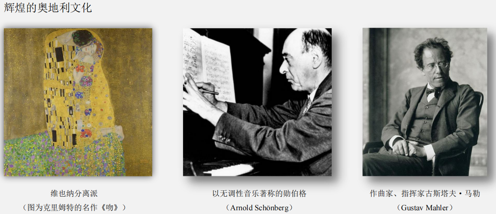
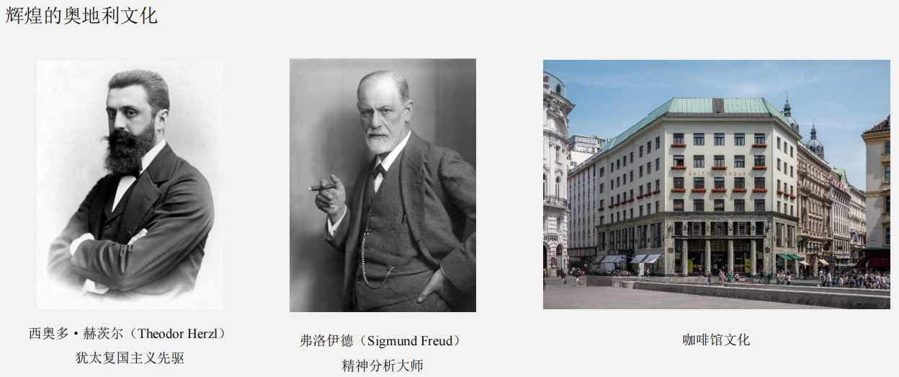
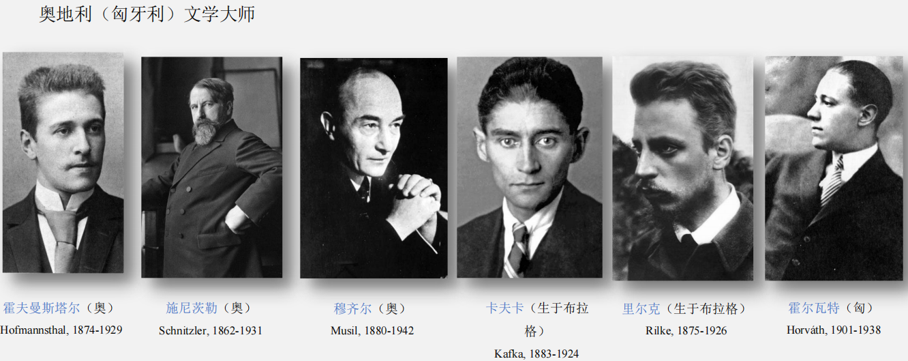
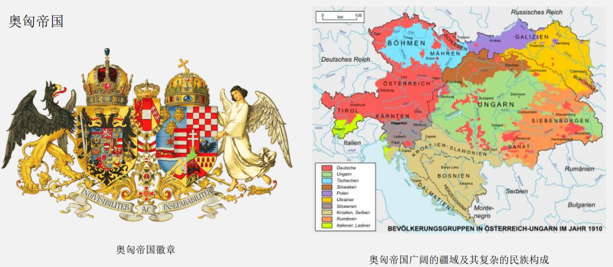
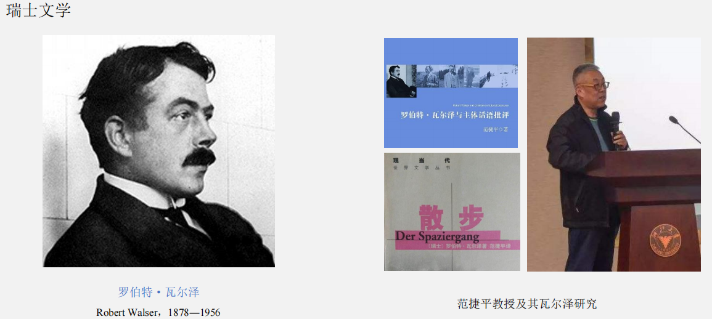
何为现代？何为现代主义？
“现代主义”由英文翻译而来，对应的德语词 “Modernismus” 在文学史中很少用到，常用的是“Moderne”。Moderne这个概念本身并没有什么“主义”的意思，它是一个时间概念，是对特定历史时期的称谓，即“现代”。而且特别重要的是，这个概念在不同学科有着完全不同的含义：
- 在哲学、历史学等学科当中，人们用 Moderne 来统称自文艺复兴以来的新时代，因此它是一个非常宏大的概念，是从宏观角度对历史时期的划分，Moderne 在这里指的其实是一个 Makroperiode。
- 在日耳曼学或者说德语语言文学（Germanistik）当中，Moderne 虽然也被用作某个时期的统称，但其指涉范畴要小得多，它仅仅指从 19 世纪末到 1933 年纳粹上台这期间的文艺思潮，因此它其实指的是一个 Makroperiode。（中文的翻译经常是“现代派”或“现代主义”）。在德语文学史上，大家一般将这段时期称作是“经典现代主义”（德语：Klassische Moderne）。
- 争议：文学史上在界定现代主义（Moderne）的起始时期时存在争议，也就是说：从什么时候开始算是现代主义文学？关于这个问题的争议，主要是因为人们对现代派文学（Literarische Moderne）的理解不同。有的学者侧重于艺术形式和表现手法的更新（如蒙太奇、意识流、内心独白等），认为现代主义的开端应当是象征主义和印象主义；有的学者侧重于主题内容方面的创新，认为自然主义者将“丑”与“恶”的事物引入文学世界，由此主张现代主义文学的开端应当是自然主义。
- 共识：目前，学界普遍倾向于将 19 世纪末兴起的“反自然主义”思潮作为现代主义文学的开端，相关的流派包括象征主义、印象主义、青春风格等。
- 反模仿：它们都反对自然主义式的对现实的复印与再现，反对一味地模仿现实，它们强调艺术的独立性，追求艺术的自治；文学的功能由此发生转变，从模仿和再现现实转向对自我的呈现，从 Repräsentation 转向 Präsentation。“反模仿”（anti-mimetisch）是现代主义的基本立场，也正因为如此，它与自然主义水火不容。自然主义者把“模仿”视作艺术的准绳，追求照相术一般对现实的完美再现，所以它不过是 19 世纪现实主义潮流的延续而已。自然主义在内容上的突破或打破禁忌只是现实主义思潮的极端化发展罢了。
二、现代派的传承与创新¶
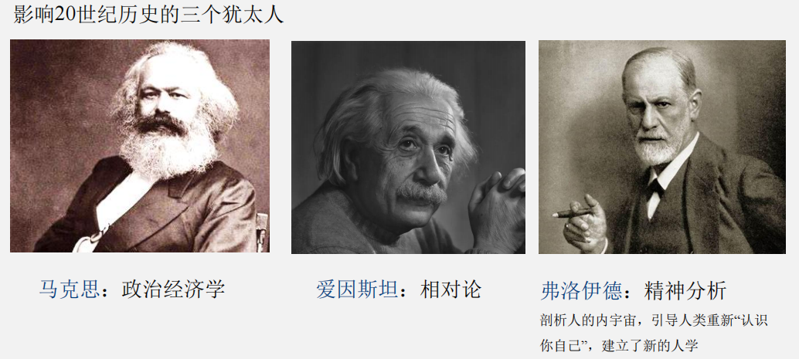
- 阿图尔·施尼茨勒（Arthur Schnitzler, 1862-1931）：奥地利剧作家、小说家。维也纳现代派的核心人物，首次把意识流手法引入到德语文学中。弗洛伊德的“双影人”。
总觉得在文学的表象后面找到了同样的假设，兴趣和结论，它们对我来说，熟悉得就像是我自己写的一样。——弗洛伊德
- 催眠术（Hypnose）：当时心理学研究的一项新成果，让病人处于无意识的睡眠状态，医生提问，引导病人说出平时压抑的回忆感觉情绪，达到治疗内心焦虑的作用。
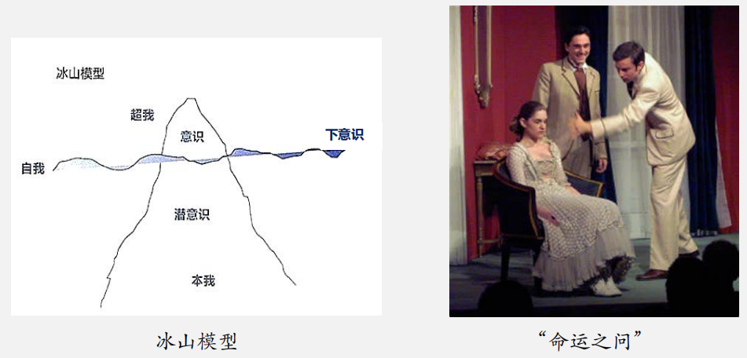
施尼茨勒 1893 年独幕剧《安纳托尔》（Anatol）的第一个场景“命运之问”（Frage an das Schicksal）中，主人公安纳托尔通过催眠术，拥有机会知道他的女朋友克拉是否忠实于他。
弗诺伊德在读了这场戏后，称施尼茨勒为“心理的深度研究者”（Psychologischer Tiefenforscher）。
1889 年的短篇小说，记录了一个刑事案件，以探究人类在生命之初时留下的记忆是否会造成长久影响。
或许这是可能的呢？我们生命最初的几个小时或许也留下了一些褪色的回忆，我们自己再也无法解释不清，但是这些回忆并没有消失得无影无踪？[...]如果母亲看我们的第一眼是充满绝望和仇恨的，这样的目光难道不会毁灭性地灼烧婴儿的心灵吗？这时它虽然还什么都不懂，却已经接受万千印象了。而一个婴儿如果是在对死亡的恐惧战栗中握过了生命的第一个漫漫长夜，那它的情感圈起了怎样的波动变化？从来没有人能讲述他在生命的第一个钟点的情形，我可以这样对法官们说，你们中没有人知道，他自己内心的善或恶是如何强烈地归因于第一丝气息，第一缕阳光，母亲的第一个眼神！我要去法院；我下了决心，因为我认为，还需要很长时间，我们才能明确知道，我们在多小程度上可以为所欲为，在多大程度上不由自主。
三、俄狄浦斯情结：以文学为蓝本¶
- 《俄狄浦斯王》是古希腊戏剧家索福克勒斯的著名悲剧，主人公在不知情的情况下弑父娶母，得知事情真相后羞愧难当，刺瞎了自己的双眼，并放逐自己流浪他乡。
- 弗洛伊德认为：每个人从 3 岁到 9 岁时都曾有过俄狄浦斯情结，女孩相应的是恋父憎母，也被称作“埃勒克特拉情结”。性爱和性欲始于早期儿童时期，而不是青春期。
- 弗洛伊德还将俄狄浦斯情结提升到人类学的维度，以此解释人类文明的起源。他在著作《图腾与禁忌》（Totem und Tabu）中指出，对俄狄浦斯情结的压抑以及由之而来对乱伦的禁忌是人类文化生成的基本前提。
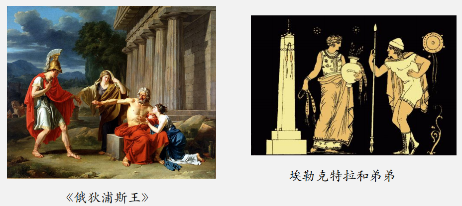
现在看来，索福克勒斯戏剧让我发现的俄狄浦斯情结，其重要性不容低估，而且表现得愈加明显。我甚至觉得，整个国家体制、风俗伦理、法制和宗教的形成都缘起于人类最初对俄狄浦斯情结的反应。——弗洛伊德
四、歇斯底里症（Hysterie）¶
我们发现，[……]只要能让病人清清楚楚地回想起引发歇斯底里的事件，而且唤醒他们经历这个事件时的情感，一旦病人能尽可能详细地描述这个事件并且说出自己当时的感受，各种各样的歇斯底里症状就会一去不复返地骤然消失。——《歇斯底里研究文集》
-
言说治疗方案：
- 唤醒沉睡的回忆，打开记忆里的黑匣子，让病人回想起创伤性的原初事件（traumatische Urszene）。
- 恢复当初经历该事件时的情感，并把这些或悲或喜的情绪感情通通发泄出来。
- 把回忆和与之相关的情感都用语言表达出来，也就是说出口。
-
歇斯底里与性别歧视：“歇斯底里”这个词源于希腊语的子宫（hystéra），根据古希腊的迷信，此病是未婚女性的子宫在体内游走所致。在 19 世纪末期的欧洲，歇斯底里研究的萌芽时期所形成的局面就是，男医生治疗女歇斯底里病人。
-
按照弗洛伊德的说法，克莱泰姆内斯特拉对自己罪行的否认是一种变相的坦白。他在1925年发表的文章《否认》（“Die Verneinung”）中讲到：“否认表示认识到了被抑制之事，其实已经是在克服抑制，只不过表面上还没有接受而已。”
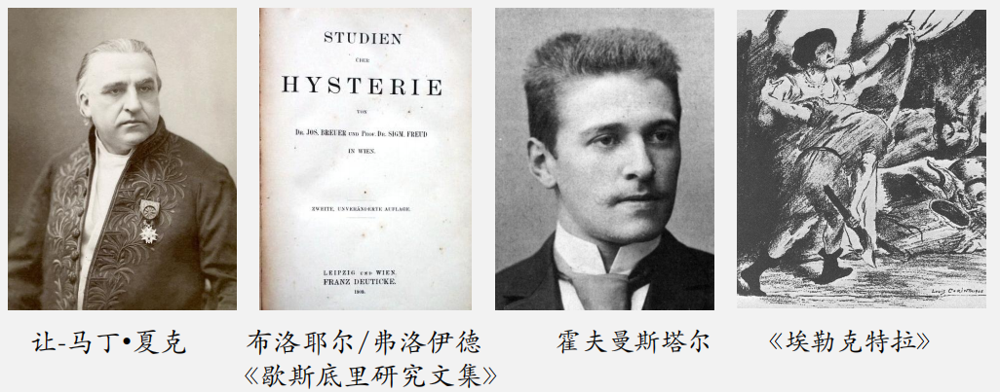
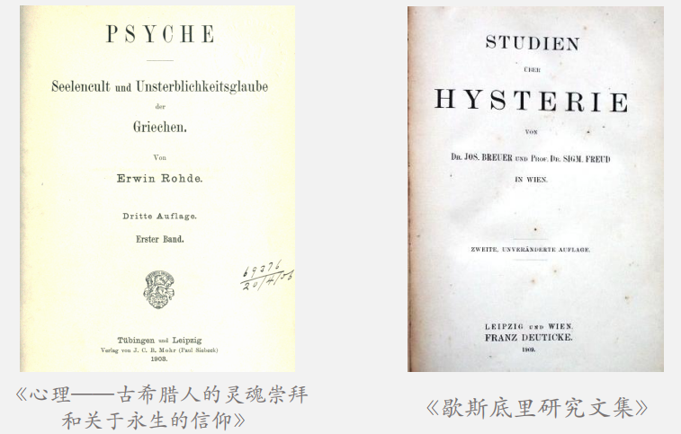
-
《埃勒克特拉》对心理学的借鉴
-
安娜O. 与埃勒克特拉的相似性
- 都有恋父情结，丧父的经历给她俩都造成了存在性的创伤。
-
父亲死亡这一已发生的事件继续横亘在当前现实中。
安娜O.：“下午时她处于无意识的梦游状态，这一直持续到太阳落山一小时以后，然后她醒过来，要么抱怨她正受着折磨，要么不断重复这个动词的不定式：折磨，折磨（Quälen）。”
埃勒克特拉：“埃勒克特拉吓了一跳，仿佛梦游者突然听见有人喊他的名字。她脚步跟跑。她环顾四周，好像这才渐渐回过神来。”
-
埃勒克特拉和安娜O.在对现实的感知上都有障碍，有时甚至感觉到与外界的疏离和周围环境的非真实。
安娜O.：“由于她不断回想过去的那一年，她时常在新家感觉又回到了之前呆的屋子，以至于她想往门走时却撞着壁炉了，因为在老家里那儿这就是房门的位置。”
埃勒克特拉：“父亲也是这样举起双手／斧头落下／劈开他的身体。”
-
安娜O.与埃勒克特拉的区别
-
安娜O.和所有的歇斯底里病人一样，关键的问题是想不起，而埃勒克特拉正好相反，她的最大的问题是忘不掉。
-
埃勒克特拉没有安娜O.发作时的身体病症，而且大脑功能庞大，反应灵敏。克莱泰姆内斯特拉被噩梦纠缠，求助于埃勒克特拉，她在与母亲的对话中，扮演的几乎就是心理分析师的角色，从事梦的解析。
-
-
五、结语¶
经典文学在这里体现出跨越历史和代际的连续性，始终富有鲜活的生命力。正是索福克勒斯的悲剧《俄狄浦斯》激发了弗洛伊德关于“俄狄浦斯情结”的理论思考，推进了科学的创新；也正是《埃莱克特拉》这一经典故事的世代流传，为霍夫曼斯塔尔提供了创作的灵感和素材，使他能够通过对经典文学的再加工、对经典人物的再塑造，参与当时关于时代病症“歇斯底里”的讨论，修缮弗洛伊德和布洛耶尔单纯以临床病例为基础的心理学认识，进而实现了诗学理念的创新。
第二讲 印象主义艺术与文学¶
一、印象主义艺术¶
- 印象主义艺术的兴起
- 印象主义的革命性
- 印象主义与自然主义的区别与联系
- 印象主义对德国艺术的影响
1. 印象主义艺术的兴起¶
源于法国 席卷欧洲
图：埃菲尔铁塔与欧洲地图
图：莫奈
图：马奈
图：德加
图：雷诺阿
图：毕沙罗
2. 印象主义的革命性¶
图：《印象·日出》
《印象·日出》（Impression - soleil levant，莫奈，1872）
“多么草率啊！这玩意儿的完整程度还不如毛坯墙纸！”（《印象派画家的展览》）
Louis Leroy
新锐大胆 备受嘲讽
- 印象主义的“革命性”究竟体现在哪里？
- 印象主义是否真的与自然主义黑白对立、水火不容？
印象主义的革命性：艺术理念¶
自然——对自然的印象
客观——主观（瞬间感、多样性）
印象主义的革命性：绘画技法¶
写实派是注重“形”的，对于色与光全然不曾顾到。……印象派的主旨，以为自然全是色与光的凑合，绘画是眼的艺术，应该以描出刺激眼睛的色与光的印象为正格。于是他们用科学的方法，把色分析。……例如立在青草地上，日光之下的人，其脸的阴面有绿色、紫色、青色，故脸色绝不像从前的规定为赭色。……凡“光”与“色”美好的，都是美好的画材，花瓶也好，杯子也好，水果也好，旧报纸也好，充其极至，不必追求画的是什么东西，画面上只是模糊的印象，只见光与色的合奏。
——丰子恺《美的情绪：西洋画派十二讲》
图：《干草垛》（莫奈）
印象主义的革命性（总结）¶
图：《印象·日出》
- 从“客观”转向“主观”
- 从“单一”转向“多样”
- 从“持久”转向“瞬间”
印象主义与自然主义：区别¶
| 自然主义 | 印象主义 |
|---|---|
| 纯客观 | 主观化 |
| 持久 | 瞬息万变 |
| 单一 | 多样 |
印象主义与自然主义：联系¶
| 自然主义 | 印象主义 |
|---|---|
| 客观的再现 |
- 印象主义和自然主义都追求再现，只是二者再现的对象不同。
- 印象主义主张客观描绘视觉感知中的瞬息片刻，描述稍纵即逝的感觉印象。因此它尚未完全摆脱再现的原则，还没有彻底实现从再现到呈现的转变。
印象主义艺术在德国¶
图：《煎饼磨坊的舞会》（法国：雷诺阿）
图：《慕尼黑啤酒花园》（德国：马克斯·利伯曼）
图：《在凡尔赛镜宫高呼德意志帝国万岁》（Franz von Werner, 1871）
马克斯·利伯曼：
- 柏林分离派的第一任主席
- 批评皇帝威廉二世的军国主义和狭隘的民族主义
- 拒绝把德意志帝国理想化，反对敌视法国
印象主义为何在德国没有形成较大气候？
- 印象派以世界的表象（Schein）为题材，满足于外在世界所带来的主观印象描绘，仍然在制造幻象。它并不探究生活的本质，不求表现背后的存在（Sein）或画面之外的超验精神。
- 印象派把描绘对象消解在迷离梦幻的光影氛围中，为现代主义艺术奠定了创作材料技术和理论基础，是现代主义艺术的开端。
有那么一天，我们当中有人没黑色了，印象派就诞生了。
图：雷诺阿
后印象主义艺术¶
《夜间的露天咖啡座》（1888）
《在阿尔的卧室》（1889）
《有房舍和农夫的景色》（1889）
图：文森特·梵高
二、印象主义文学¶
- 印象主义与自然主义的早期结盟
- 重新阐释“印象”：走向反自然主义
- 视觉感知：印象主义如何观看？
1. 印象主义与自然主义的早期结盟¶
从法国“进口”而来与德国自然主义共鸣
他们认为，印象主义发展并完善了自然主义。
图：施拉夫
图：阿尔诺·霍尔茨
图：李利恩克龙
既然印象主义起初与自然主义息息相关，为什么日后反而被看成反自然主义的一个流派？
2. 重新阐释“印象”：走向反自然主义¶
“印象”原意：光影色彩反映到视网膜上的图像
↓
赫尔曼·巴尔（Hermann Bahr）等
“印象”新解：观者完全主观的印象
图：赫尔曼·巴尔（1863-1934）
图：《Zur Überwindung des Naturalismus》书封
“不要模仿外在自然”
要探索内在的东西
“让外部生活进入内心精神”
排除“一切非情绪的残余”
现代派作家追求“主观的真实”
真实 感觉
赫尔曼·巴尔（1863-1934）
印象主义对巴尔而言更像是一种神经艺术（Nervenkunst）。直到1904年《印象主义》一文才正式使用“印象主义”，此前一直都用 das Nervöse（神经性的）一词。
“我们只相信感觉”
情绪：作品的内容和形式都充满着含蓄、朦胧和模糊，传达出的是一种瞬息而逝的情感。
印象主义的文学创作也由此完全转向了个人，完全主观化了。
3. 视觉感知：印象主义如何观看？¶
赫尔曼·巴尔 (1863-1934)
- 聚精会神的凝视
- 主体对客观世界的把握
- 客体世界对观者感官的刺激
- 不受观者主体意识把握的感知流
图：恩斯特·马赫 (Ernst Mach)
世界上的物其实是都是人的感觉的复合，组成物体的各种要素（颜色、声音、温度、空间、时间等）仅仅存在于人的感觉当中，世界是人们感觉的总和。
——恩斯特·马赫《感觉的分析》
“印象主义哲学”
| 印象主义 | 表现主义 |
|---|---|
| 被动的观看 | 表现、表达 |
| 印象的艺术 | Expressionismus |
| Eindruckskunst | expressio=Ausdruck |
- 技术变革催生电报式风格 (Telegrammstil)
《我怎么看》（Wie ich es sehe, 1896）
Es darf nicht heißen, wie ich es sehe. Es muß heißen: Wie ich es sehe.
重音不在“我”，而在“看”。
图：彼得·阿尔藤贝格 (Peter Altenberg, 1859-1919)
- 技术变革催生电报式风格 (Telegrammstil)
- 强调所见之物的现在时和瞬间性
- Augenblick（瞬间） = Augen-Blick（目光）
- Augenblicksmensch（强调瞬间的人） = Augenblicksmensch（强调目光感知的人）
- 《白天带给我什么》：“我”不是一个积极的、行动的主体，而是被动的接受者
我写的小东西算是文学吗？不算。那只是提炼物！是生活的提炼物。偶尔某一天里，灵魂排除了多余之物，蒸发在三两页纸片上。……留给读者的，便是依靠自己的力量把这些提炼物化解为可以享用的肉汤……我喜欢这种短小的写法，这是心灵的电报式风格。
感谢！
第三讲：现代主义的观看主题¶
（以象征主义和青春风格为重点）
浙江大学德国学研究所 刘永强副教授
lyqgermanist@163.com
一、象征主义¶
- 象征主义概论
- 象征主义绘画
- 象征主义文学
象征主义 (1880-1910)¶
- 技术背景：生活日益机械化、物质化
- 艺术追求：追求表象之后的启示，生活的奥秘和深层含义，推崇精神、直觉、灵魂和超验
- 创作题材：死亡和神话、神秘和宗教
- 感知模式：艺术应当突破可见、可感世界的限制和感官所设的樊篱
1.1 象征主义概论¶
图：莫里斯·丹尼斯 (Maurice Denis)
反对写实的自然主义
反对纯技巧的印象主义
艺术不再是一种简单加以接受的纯粹视觉体验。艺术并非自然的照片，也算不上精致的照片。不，艺术是我们精神的作品，自然不过是为它提供了动因。如高更所言，我们不是在眼睛这一领域里工作，而把研究引向了神秘的精神中心。如此一来，顺着波德莱尔的愿望，想象力再度成为一切力量的女王，而我们解放了自己的感性。
1.2 象征主义绘画¶
费迪南德·霍德勒
图：自画像（Ferdinand Hodler）
图：Valentine（组画，部分）
阿诺德·勃克林
图：自画像（Arnold Böcklin）
图：《死者之岛》（Die Toteninsel）
1.3 象征主义文学¶
- 创作理念：反对自然主义，反对模仿论。提倡绝对的艺术自治，主张“为艺术而艺术”。
- 风格特征：善于运用心理暗示和多重意象的表达，使用唯美和形式化的艺术语言。在诗歌中，注重音乐性，常以陌生化的句式和通感、暗喻等修辞来凸显自治化的语言艺术。
- 精英文化：象征主义艺术家和文学家大多愤世嫉俗，与社会相对抗，越来越形成一小撮人的精英艺术，这在格奥尔格圈子里体现得最为明显（详见慕课“象征主义”单元）。
图：格奥尔格
二、文本细读：《愚者与死神》¶
- “观看”话语与唯美主义
- 《愚者与死神》
- 图像转向
2.1 “观看”话语¶
感官的等级秩序
图：感官等级示意图
在19世纪，“看”成为最主流的认知方式
→ 远距离感官
→ 近距离感官
1900前后的“观看”¶
- 媒介技术：照片、无声电影、图片报纸
- 艺术流派：象征主义、印象主义、青年风格派
- 心理分析：将不可见之物可见化
自然主义 vs. 唯美主义¶
| 自然主义 | 唯美主义 |
|---|---|
| 以柏林为中心 | 以维也纳为中心 |
| 客观再现、反映 | 主观审美体验 |
| 追求艺术的独立性、封闭性，“为艺术而艺术” |
总的来说，唯美主义的主张与追求与象征主义者不谋而合。所以，有人认为，象征主义是体现唯美主义思潮的主要流派之一。
唯美主义如何观看？¶
他们并非从自然走向艺术，而是反其道而行之。他们眼中的蜡烛映射在威尼斯的玻璃中，仿佛寂静湖水中的星辰。褐色泥沼中的紫色花朵会让他们想到一幅色彩斑斓的油画，一个挂在棕色栎木画框中的乔尔乔内。对他们而言，只有经过艺术洗礼，获得风格和氛围，生命才能焕发出活力。……少女的外貌令他们想起希腊陶罐上那些修长而圣洁的形象。而优雅翱翔的鹳鸟则令他们想起日本的装饰图案。（霍夫曼斯塔尔）
艺术成为唯美主义者观看和审视世界的媒介，他们以此发现并且感受到美。世界变成了审美评判的艺术品（图像），人们的感知依附于自己过去的艺术体验。
柱子边上的玻璃盒里陈列着文物。右侧墙边摆着一个哥特式的深色雕花箱子；上方挂着一个古老的乐器。一幅由意大利艺术大师绘制的油画已经几乎变黑。壁纸的色调明亮，近乎白色，带有石膏花饰和黄金。
往日大师就这样绘画 马利亚背着云彩
现实风景的图像、引文图像、幻想图像互相叠合，共同构建着人物所感知的世界。他对现实世界的感知和理解不是基于现实的经验，相反取决于阅读和艺术体验。
2.2 《愚者与死神》¶
在所有那些娇美的红唇上，我从未吮吸过生命的真实滋味，从未被真正的痛苦震颤，从未！含泪独行于街道。每当我从自然的馈赠中有所感念，那过于清醒的感官则会响亮地称呼它的名字，让我无法忘记。当成千比喻纷至沓来，那种熟悉，那种幸福早已逝去。痛苦啊！思索令我褴褛，心碎褪色，枯干！
我如此迷失于艺术，以致我用死亡的眼睛观看太阳而听到的也无非是通过死亡的耳朵：
现在我终于有所感念——放过我吧——让我去生活！
我在无尽的渴望中感触到了一切：我能将心交付于尘世之物。
哦，你会见到，一切于我将不再是无声的动物和木偶！
它们将向我心诉说，
我将尝尽一切苦乐。
我要学会忠诚
那是一切生命的倚仗……
对一个纯粹美学的艺术作品的直观是在严格排除任何智慧的存在性表态和任何感情、意愿的表态的情况下进行的，后一种表态是以前一种表态为前提的。
（胡塞尔）
图：胡塞尔 (Edmund Husserl)
在中世纪及近代早期，图像以及图像背后的想象力一度受到西方宗教和科学势力的压制，作为幻想的物化，图像的无限创造性象征着人对上帝权力的僭越，因此一直以来它只能以潜流的形式隐现在知识体系的建构过程中。
19世纪晚期，随着摄影和电影技术浮出水面，摄影术取代了绘画艺术的技巧性，对世界的艺术性参差感知渐渐流失，复制图片大量增殖。照相技术以“忠实复制”的原则记录历史，承载着人类记忆，并一跃成为主流媒介。
图：摩西像版画
图：老式相机
2.3 图像转向¶
图：本雅明（Walter Benjamin）指出技术复制时代中光晕的消失
图：本雅明在档案馆
图：用手机拍摄梵高画作
图：波德里亚（Jean Baudrillard）的“拟像”概念指出时代症结
世界之于唯美主义者而言只是图像：由视觉印象、幻想和记忆共同构建的图像。
图像化的进程会造成人类感知方式的审美化，唯美主义的危机形态也会在不同程度上显现出来。
三、青春艺术¶
- 维也纳分离派
- 青春艺术的形成
- 青春艺术对文学的影响
3.1 维也纳分离派¶
维也纳分离派 (Sezession, 1897-1905)
图：成立时期成员
图：分离派会馆——“镶金大白菜”
克林姆特 (Gustav Klimt)
图：克林姆特
图：《弹钢琴的舒伯特》（1899年）
图：克林姆特作品
图：拜占庭马赛克作品（12世纪）
图：金色阿黛拉，1907
《吻》这幅画是充满矛盾的，既是表现诗意性爱幸福，正因为脱离具体的文化社会条件，成了永恒幸福的象征；同时又展示其中潜在的不和谐矛盾，男女在发色和肤色上的差异、动作手势站姿的不同，都说明男性所占据的主导地位，男人的生硬和女人的矜持使人物动作仿佛陷入停滞，女人更多是顺从接受，成为男性自我建构的一部分。
图：《吻》
3.2 青春艺术的形成¶
反对历史主义：并非“只要过去的就是好的”
图：维也纳议会大厦（古希腊式）
图：维也纳市政厅（哥特式）
图：维也纳大学（新文艺复兴式）
图：城堡剧院（新巴洛克式）
维也纳的一些仿古建筑
图：约瑟夫皇帝和皇后茜茜公主的夏宫（Kaiservilla）
图：《历史主义与青春艺术 1871-1918》书封
青春艺术的形成
- 源自西欧：与英国工艺美术运动密不可分
图：前拉斐尔派主将米莱斯（J.E.Millais）的画作
- 鱼子酱文化，具有很强的精英色彩和贵族意识
-
提倡振兴传统手工业，尤其是工艺精湛的中世纪哥特式艺术风格
-
途径比利时：在比利时发展为新艺术运动
图：凡·德·费尔德 Henry van de Velde
图：费尔德设计的家具和烛台
图：霍塔 Victor Horta
图：霍塔设计的室内楼梯
- 在德语区形成“青春艺术”
图：《青春》（Jugend）杂志
在19世纪90年代，慕尼黑分离派、维也纳分离派以及柏林分离派相继成立，势头强劲。他们主张创作与生活相结合，追求一种新的、充满活力的艺术风格，分离派逐渐发展出自己的风格——“青春艺术”（或“青春风格”）。这一名称源自他们在慕尼黑的杂志《青春》。
图：奥托·瓦格纳 Otto Wagner
图：奥托·瓦格纳设计的地铁站
图：卡尔大教堂
图：音乐之友协会
周边建筑与地铁站格格不入
图：奥托·瓦格纳 Otto Wagner
图：维也纳邮政储蓄银行
3.3 青春艺术对文学的影响¶
- 文学中的“青春风格”强调青春活力以及生命冲动，赞美生活，崇拜美。
- 当时，没有一位作家可以完完全全算作“青春风格”这一流派。即便如此，这些作家又几乎没有一位能够脱离这种流行时尚。
- 青春风格倾向表现得最明显的作家是戴默尔和贝尔—霍夫曼。格奥尔格等作家以及里尔克、霍夫曼斯塔尔、黑塞和施塔德勒（Ernst Stadler）等的早期作品，也具有青春风格的特点。
图：《青春》杂志封面
他在奥塞湖遇见了她。暮色之中，他站在她的对面；站在草坡上高大的白色水仙之间。这些水仙如此茂密，每走一步都有可能踩弯那些细长的茎干。在她身后，草地边缘紧挨着明亮的夜空；密布的芳华和她纤细的洁白身姿，同他显得泾渭分明。她自在地把胳膊靠在高耸的伞柄上。当她缓缓走下山坡，她的轮廓从明亮的天空滑落到开满白花的草坡。那草坡如此陡峭，像墙壁似的耸立在她身后。她仿佛几乎没有躯体；只剩下她自己洁白的形象。布满水仙的墙纸上，在花朵与茎干的奇异线条中，她那洁白的形象凸显了出来。
图：贝尔—霍夫曼 (Beer-Hofmann)
死亡与艺术。“唯美主义者致命的目光”。死亡美学的颓废乐趣，乐于将生命还原为毫无审美实质和审美结果的情绪刺激。世界被消解，成为装饰品以及这种装饰品文学化的转换。现实与梦境、叙述者与人物间矫揉造作的互动。叙事视角由于内心独白和自由间接引语（erlebte Rede）变得模糊。纠缠不休—点到为止的主导动机技巧（Leitmotivtechnik）。所有这一切都让《格奥尔格之死》成为维也纳现代派文学的缩影，使它成为欧洲唯美主义与世纪末颓废主义文学的重要文本。
感谢！
第四讲：表现主义艺术与文学¶
浙江大学德国学研究所 刘永强副教授
lyqgermanist@163.com
大纲¶
一、丑的“美学”
二、德国表现主义艺术
三、德国表现主义文学
一、丑的“美学”¶
与“青春风格”区别¶
| “青春风格” | 丑的“美学” |
|---|---|
| 崇尚唯美 | 画丑，揭示人内心的恐惧和无助 |
| 装饰性 | 去除装饰 |
代表性画家
图：Egon Schiele 埃贡·席勒
图：Oskar Kokoschka 奥斯卡·科柯施卡
代表性建筑师
图：Adolf Loos 阿道夫·路斯
路斯憎恶建筑中的装饰成分
我有一个发现，把它向世界公布如下：文化的进步与从实用品上取消装饰是同义语。[...] 装饰的复活是危害国民经济的一种罪行，因为它浪费劳动力、钱和材料。由于装饰不再跟我们的文化有机地联系，它就不再是我们文化的表现了。摆脱装饰的束缚是精神力量的标志。
文化的道路是一条从远离装饰性而走向无装饰性的道路。从日用品中去除装饰物，这一过程与文化的演变是类似的。
——《装饰与罪行》（1908）
装饰是罪恶，是野蛮行为，无装饰才是文明的表现。
路斯的设计对同时代的冲击
图：Das Michaelhaus - Looshaus (Adolf Loos, 1909/10)
图：Majolikahaus (Otto Wagner)
科柯施卡笔下的好朋友路斯
图：《路斯画像》，科柯施卡，1909
1909年路斯结识画家科柯施卡 (Oskar Kokoschka)。
Oskar Kokoschka：以画疯狂病态为主旨，创造惊世骇俗的效果。
科柯施卡不局限于描摹相像，具有预见性
图：《佛瑞尔肖像》，奥斯卡·科柯施卡，1910
图：《格特鲁德·斯坦因的肖像》，毕加索，1906
科柯施卡油画《玩耍的孩子们》
图：《玩耍的孩子们》
贡布里希评论道：
“他们看起来是多么的不一样啊！那时候的儿童肖像一般看起来都是漂亮、满足的样子。成年人并不想知道孩童时代的任何危机和痛苦；若有艺术家直接表现这类主题，大家就会心生抱怨。科柯施卡不会也不想继续这样的谎言。我们可以看到，他是以感同身受的姿态表现孩童。他看到了他们的不足和耽于幻想，看到了他们尚未发育的躯体和撇足的动作。”
科柯施卡油画《风之新娘》
图：《风之新娘》
阿尔玛·马勒：
“在他的大型画作《风之新娘》中，他画了我在风暴中和最汹涌的海浪中充满信任地依偎在他身边，期待着他的救助，他那张霸气的脸散发出能量，令海浪平息。”
科柯施卡油画《穿蓝衣的女人》1919
图：《穿蓝衣的女人》
埃贡·席勒 (Egon Schiele)
图：《爱德华·科斯马克肖像》，埃贡·席勒，1910
图：《自画像》，1910
图：手稿 TANNENWALD
埃贡·席勒
创作以性为题材的油画。
性不是解脱，而是厄运，人被性欲所主宰，是性欲的奴隶，而性欲的满足导向死亡。
埃贡·席勒与克里姆特之比较
在克里姆特处所画出来的柔软的皮肤，在席勒那里则表达为神经和筋肉；在克里姆特处四肢是流动的，但是在席勒那里躯干蔓延交叉且扭曲；克里姆特画笔下的女人是诱人的，而在席勒笔下则是有震撼力的。
埃贡·席勒《拥抱》1917
图：《拥抱》
二、德国表现主义艺术¶
表现主义之前：印象主义
图：《印象·日出》
- 强调户外写生
- 依据眼睛的观察和现场的感知
- 追求表现对象的整体感和氛围
德国表现主义代表流派：
- 桥社 (Die Brücke, 1905–1913)
- 蓝骑士 (Der blaue Reiter, 1912–1914)
1905年，在德累斯顿学建筑的四名大学生集成艺术团体。
初期成员创作一致 追求创作上的结盟
图：福里茨·布莱依尔 Fritz Bley
图：埃里奇·赫克尔 Erich Heckel
图：路德维西·凯尔希纳 Ludwig Kirchner
图：卡尔·施米特-鲁特勒夫 Karl Schmidt-Rottluff
桥社的建立
在凯尔希纳的工作室里，人们聚在一起工作。在这里，人们有机会自由、单纯地研究裸体人像，这是所有视觉艺术的基础。在此基础上的绘画使他们产生了共同的感觉，即从生活中攫取灵感进行创作，并使自己服从于这种体验。……由此他们全然自发组成为一个叫做“桥社”的团体。
团体活动初期共用画室，共同创作；桥社的成员没有受过专业训练，无师自通。
为何取名为“桥社”？
- 桥 (Brücke) 是一个充满象征意义的词
“我们当然考虑到了如何进入公众视野。一天晚上，我们在回家的路上又谈到了这个问题。Schmidt-Rottluff说，我们可以把它称之为桥——这是一个多层次词，它并不意味着一个项目，但是某种程度上意味着从一岸通向另一岸。我们很清楚我们必须离开什么，我们最终去向何方却不那么明确。”
图：埃里奇·赫克尔 (1883.7.31——1970.1.27)
为何取名为“桥社”？
- 通过新锐艺术创造未来，与陈腐守旧一刀两断
桥社宣言：
“怀着对发展的信念、对新一代创作者和享受者的信念，我们将年轻人召集在一起。与相对可能较旧的势力相比，我们作为承载未来的年轻人，要自己创造生活的自由。”
图：路德维西·凯尔希纳 (1880——1938)
尼采：桥社成员的精神导师
桥社的关键词：自由和青春
人的伟大，乃在于他是一座桥梁而不是目的。人的可爱，乃在于他是一个过程而不是没落。
——《查拉图斯特拉如是说》
桥社代表：Kirchner
图：作品三幅
桥社创作源：蒙克、凡·高
图：《呐喊》Edvard Munch (1893)
图：《在夕阳下撒种》(Van Gogh)
德国表现主义艺术
图：《玩耍者》，Ludwig Kirchner
图：《三个沐浴人》，Ludwig Kirchner
原始主义
奥托·穆勒
穆勒的生命与作品有一种感性和谐，这使他很自然地成为“桥社”成员。他为我们带来了水胶涂料的魅力。
图：Badende (1911)
图：Drei Badende im Wasser (1913)
德国表现主义艺术
图：Otto Müller 作品
常见母题
图：城市街景
图：士兵与裸女
德国表现主义艺术
蓝骑士：
- 强调个体性，是一个松散的组织
- 有系统的美学主张——1912年出版《蓝骑士》（Der Blaue Reiter）
- 融入斯拉夫文化元素，三位核心成员来自苏联
- 存在时间只有两年，到那时影响深远
图：康定斯基 Kandinsky
图：雅夫伦斯基 Jawlensky
图：韦勒夫金 Werefkin
蓝骑士-康定斯基
图：作品
蓝骑士-康定斯基
“颜色是键。眼睛是锤子。心灵就是有许多弦的钢琴。”
图：《无题》，康定斯基，1913
蓝骑士-康定斯基：
“这些图像主要描绘出了无意识、大部分情况下突然产生内在特征的表达或者过程，这些表达或者过程是内在本质的印象。”
图：《骑士（即兴12）》，1910
蓝骑士-康定斯基：
- 创立了关于色彩和形式的纲领性文献，研究色彩和形式所蕴含的特征和氛围，建立了与音乐相对应的色彩谱系学，色彩所产生的心理效应
- 绘画成了象形文字，色彩和形式就是这种文字的符号，线条是其中的标点符号。
- 抽象的形式使观者接触到事物外表下的本质。
图：《Über das Geistige in der Kunst》书封
图：《即兴：克拉姆》，1914
蓝骑士-弗朗茨·马克：
图：作品
蓝骑士-弗朗茨·马克：
很早以前，我就觉得人是“丑陋的”；在我看来，动物更加美丽、更加纯洁；但即使是这样，我也在动物身上发现了如此之多的与情感不符的、丑陋的东西，以至于迫于内心我的描绘在直觉上变得愈发形式化、愈发抽象了。
图：《蓝马》，1911
蓝骑士-弗朗茨·马克：
图：《白猫》,1912
图：《老虎》,1912
Marc集中以动物为题材，不是为了再现自然状态，而是以此表现宇宙的和谐，是神秘的内心建构。
就其本质而言，艺术在过去和现在任何时候都与天然和“自然性”大胆地保持距离，是进入精神领域的桥梁。
三、德国表现主义文学¶
图：赫尔曼·巴尔（1863-1934）
“（人类）从未有任何时候像现在这样为惊惧、死亡所动摇，世界还从未有过这样墓穴般的寂静，人类从没有过这样渺小，（……）也从未有过这样的担忧，欢乐从未这样疏远，自由从未呈现过这般死寂。这时，困境高声（地）吼叫起来，人类呼叫着要回到（自己）的灵魂中去，整个时代都化为困境的呼叫。艺术也在深沉的黑暗处发出吼声，它在呼救，它在向精神呼救：这就是表现主义。”
《世界末日》
雅考伯·凡·豪迪斯
帽子从市民的尖脑袋上飞落，
狂风中到处都听到惊惶的喊叫，
房顶摔下来跌成两半，
报纸上写着，
海边正在涨潮。
风暴来了，任性的海水蹦蹦跳跳
冲向岸边，要把坚固的堤坝冲掉。
人们都患了伤风，
火车倒栽下大桥。
《城市之神》格奥尔格·海姆
他盘坐于群楼之上，
风阴沉地在他额畔栖息。
他怒视远方，
仅剩的房屋孤寂地在乡间走失。日暮十分，巴尔神的腹部红光熠耀，
一座座都市拜倒在他身旁。
教堂的钟声在黑色塔楼的海洋中呼啸，
一次次汹涌地朝他掷浪。百万人的乐声响彻街道，
就如同跳着库瑞忒斯的舞段。
烟囱的浓烟与工厂的尘云袅袅
将他萦绕，仿佛乳香的芬芳慢慢变蓝。风雨在他眉间积藏，
沉沉暮色推移入夜。
狂风从他冲冠的怒发中滋长，
似秃鹰俯瞰一切。他将屠夫的拳头伸入黑暗之地，
挥拳。一片火海疾驰着穿越街道。
炙热的浓烟呼啸，将路吞噬，
直至破晓。
《致读者》 弗朗茨·韦尔弗
我唯一的愿望是与你，与全人类血肉相连！无论你是黑人、杂技演员，还是襁褓中的婴儿，是歌声婉转的少女，还是晚霞中划动竹筏的船夫，无论你是一名坚韧的士兵还是一名勇敢的飞行员。
在你尚为孩童时是否也曾持过绿枪袋中的枪？当你开枪，枪管前的木塞便飞出枪膛。我的同胞啊，当我唱起回忆的曲调，莫要冷漠，让我们在泪水中尽情哭嚎。
我感受过所有的命运。因此我深知疗养地的交响乐中竖琴独鸣的孤寂，陌生家庭中家教的胆怯，还有新手初次登台时在题词框前禁不住的颤栗。
我曾居于丛林，任职于车站，埋头收支簿中，侍奉焦躁的顾客，也曾当过司炉工，让炉中烈火曾烁烁于我的脸颊，也曾身为苦力，把垃圾与冷炙残羹默默吞咽。
我归属于你，且归属于全人类！请你不要与我作对！啊，兄弟们，愿有朝一日，你我亲密相拥直到没有任何距离！
海姆 (1887-1912) 特拉克尔 (1887-1914)
图：海姆
图：特拉克尔
《深渊》 格奥尔格·特拉克尔
一场黑雨落在收割后的庄稼地。
一颗黑色的树子独立。
一阵疾风刮过空荡的草棚
这个黄昏多么忧伤。走过村庄
柔和的孤儿还在拾零散的麦穗。
她圆亮的眼睛在暮色里觅食。
她心中期待着天堂的新郎。回家的路上
牧人发现柔美的躯体。
腐烂在刺丛里。我是一个影子远离阴沉的村庄。
从林苑的井里
我啜饮过上帝的沉默。冰凉的金属践踏我的前额
蜘蛛搜寻我的心。一丝光熄灭在我的嘴里。
夜里我曾在荒原找到自己，
沾满了星星的垃圾和尘埃。
榛子林中
再度响起晶莹的天使。
《致妹妹》 格奥尔格·特拉克尔
你去的地方将是秋天和黄昏，
蓝色的野兽在树下沉吟，
寂寞的池塘静卧黄昏。群鸟的飞翔悄声沉吟，
忧郁印在你的眉间。
你浅浅的微笑也在沉吟。上帝弯曲了你的眼睑。
夜里，耶稣受难日的孩子，
星星搜寻着你的额间。
《三个梦》 格奥尔格·特拉克尔
一
仿佛，我梦见落叶飘零，
森林旷远湖泊幽暗，
忧伤言辞的回音——
其意我却难谱。仿佛，我梦见星辰坠殒，
苍白眸子泪流渴盼，
一缕微笑的回音——
其意我却难谱。如同叶落，如同星殒，
顾影永久兀自盘旋，
一场梦的不朽回音——
其意我却难谱。二
幽幽我之心镜映照着
从未谋面的沧海，
还有荒凉、悲壮的国度，
消散了，溶入飘缈的蔚蓝。我心分娩出血紫色的穹冥
硕大的骄阳炙烧天半，
还生下花园绮丽、微光烁闪，
蒸腾着燠热、致命的醉欢。幽幽我之心井
把恐怖暗夜的景象酿造，
因无名的歌唱而不安——
因永恒魔力的呼吸而颤摇。回忆晦暗我心战栗，
灵魂似乎在万物中将自己觅到——
在深不可测的大海与夜晚，
在深沉的歌声里，无开端无终了。三
我曾见烈火吞噬众城
罪孽加罪孽将时代积满，
还曾见众民族化为埃尘，
一切渐渐被遗忘弥漫。我曾见众神冲向黑夜，
最神圣的竖琴颓然弦断，
从腐朽中重新燃起，
新生命跨越白昼之门槛。灾进到白昼重又去远，
永远相同的悲剧，我们在上演，
虽其意难谱，悲剧如疯癫之夜的痛苦迷津
萦绕美的柔和光晕
恍若微笑的荆棘林。
德国表现主义戏剧：
图：《德国表现主义戏剧：托勒尔与凯泽》书封
图：恩斯特·拖勒
图：乔治·凯泽
德国表现主义电影：
图：German Expressionism 电影海报
图：《从卡里加利到希特勒：德国电影心理史》书封
德国表现主义文学
图：阿尔弗雷德·德布林
图：《王伦三联》
图：《亚马孙三部曲》
图：《柏林，亚历山大广场》
感谢！
浙江大学德国学研究所 刘永强副教授
lyqgermanist@163.com
2022年3月